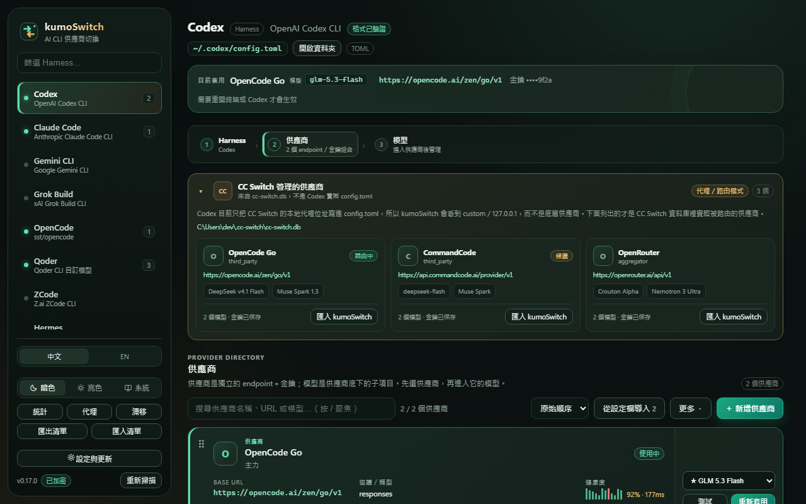
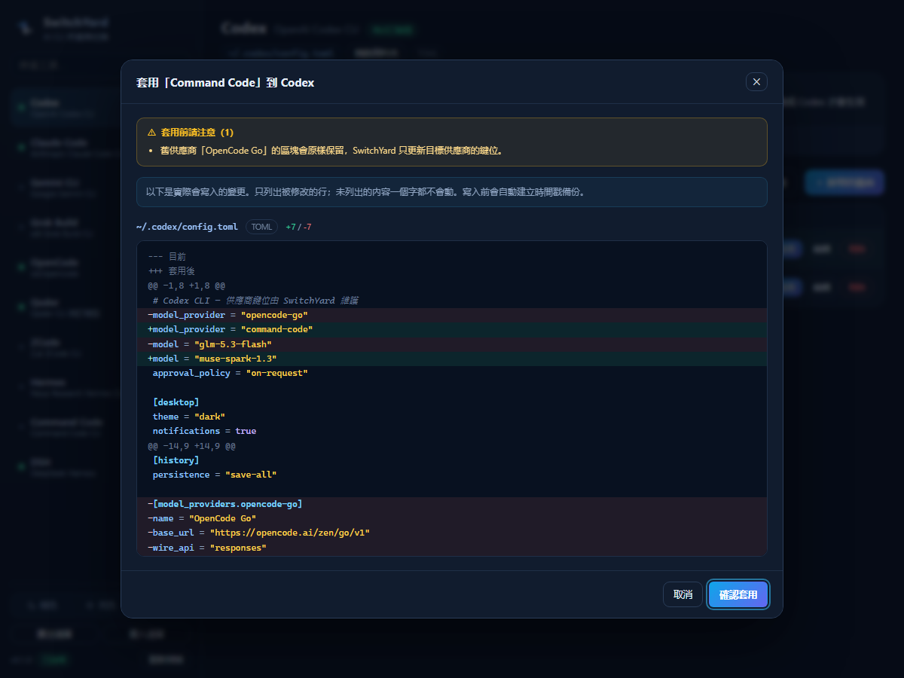

◇
非破壞性寫入
不用序列化器重寫整份檔案。JSON 用語法樹定位位元組區間、TOML 用 toml_edit 保留格式，
只把目標值那段文字換掉。沒被列進 diff 的內容，一個位元組都不會變。
Codex、Claude Code、Gemini CLI、OpenCode、Qoder、Crush⋯⋯13 種工具的供應商設定， 集中一個視窗管理。kumoSwitch 只定點改寫供應商相關的那幾個鍵， 你的註解、外掛、MCP、主題全部原樣保留。
正在取得最新版本…
v0.8.0 起由 SwitchTower 更名為 kumoSwitch；更早版本名為 SwitchYard。

供應商切換看似只是換一個 URL，實際上每個工具都有自己的設定格式、鍵位與生命週期。 kumoSwitch 把這件事拆成「先預覽、再備份、只改必要鍵位」三個可驗證的步驟。
不用序列化器重寫整份檔案。JSON 用語法樹定位位元組區間、TOML 用 toml_edit 保留格式，
只把目標值那段文字換掉。沒被列進 diff 的內容，一個位元組都不會變。
按下套用不會立刻寫檔，而是先算出「目前 → 套用後」的逐行差異，標出新增與刪除行數。 看清楚再確認，不確定就取消。
每次寫入前自動把要動的檔案複製到時間戳快照。列表看得到每次改了哪些檔， 任何一次都能用一個按鈕還原回當時狀態。
關掉視窗也還在。托盤右鍵展開每個工具的供應商清單，點一下就切換， 不必開視窗、不必找設定檔。單一實例，不會開出兩個托盤圖示。
一個搜尋框橫跨 13 個工具的全部供應商。輸入名稱、模型或工具名， Enter 就看 diff，確認後套用。
每個供應商可以保存多個模型與能力資訊。同步 /models 時顯示欄位級差異，
未回報模型只標記、不刪除；每個供應商可設定獨立同步間隔與退避，常用模型可從卡片、Ctrl+K 或托盤直接切換。
固定順序、優先級、加權與健康優先路由；每個供應商可設定 timeout、允許模型、 模型映射、429 退避與熔斷，並即時查看成功率、TTFB、換手原因與逐請求決策軌跡。
掃描所有 Harness 後先預覽新增與衝突項目，再選保留本機、覆蓋、合併模型或建立副本； 漂移中心也會持續比對真實設定與 kumoSwitch 清單，支援待處理篩選、批次重新套用與批次匯入。
真實模型實測可一次選取多個模型，具備近 24 小時配額、輸出 token 上限與費用粗估。
第一次打開會偵測你已經有的設定檔，列出可導入的供應商，
勾選後一鍵收進來——完全不動原本的檔案。
若偵測到其他代理工具正接管同一套設定，會直接在上方提示， 避免兩個工具互相覆蓋後你找不到原因。
沒有帳號、沒有雲端同步、沒有遙測。設定與備份都放在你自己的
%APPDATA%\kumoSwitch 裡。
自動偵測安裝位置，開啟即知道哪些工具已就緒。格式未實測的會標記提醒先看 diff。

Codex 要 model_provider 加 [model_providers.*]；
Claude Code 要 env.ANTHROPIC_BASE_URL；
Qoder 要在 providers 底下建一個 qoder-custom-* 物件；
DSH 是 YAML 的 llm-pi-ai.providers 加 agent-default-model。
這些差異都寫在各自的轉接器裡，你只需要填名稱、Base URL、API Key，接著管理這個供應商底下的一組模型。
不要求你先相信任何宣稱；每一步都能在套用前檢查，也能在套用後還原。
讀取目標工具目前的設定，只規劃供應商相關的鍵位。註解、外掛、MCP 與其他區塊不進入寫入範圍。
套用前先顯示「目前 → 套用後」的差異。沒有出現在 diff 裡的內容，不應該被你的手動確認意外改掉。
每次寫入建立時間戳快照。格式不符、端點失效或想改回舊供應商時，都能從同一份清單恢復。
代理／故障轉移、逐模型健康度與匯入衝突處理都已整合進同一套可稽核流程；核心仍是安全地切換供應商。
Windows 10／11 x64、macOS Apple Silicon／Intel、Linux x64。Windows 安裝檔建議一般使用者；可攜版不寫註冊表。
未簽章 Beta：Windows 可能顯示 SmartScreen「未知發行者」，macOS 可能顯示 Gatekeeper 警告；請確認下載來源，並用 SHA-256 核對檔案。
寫入是定點替換：只改供應商相關的鍵。套用前你會看到逐行 diff，寫入前會自動備份，壞了也能一鍵還原。專案內也附了直接對真實設定檔執行的唯讀測試，驗證其他區塊零改動。
Windows 在 %APPDATA%\kumoSwitch\providers.json，macOS／Linux 在 ~/.config/kumoSwitch/providers.json，以及各工具原本就該存金鑰的位置。Windows 使用 DPAPI；macOS／Linux 以 Keychain／Secret Service 保存主金鑰，供應商金鑰再以 AES-256-GCM 加密。沒有雲端、沒有上傳、沒有遙測。
會。v0.8.0 會優先遷移 SwitchTower 的資料；若不存在，再回溯更早的 SwitchYard。供應商、備份、歷史紀錄、主題與語言都會保留。
目前是未簽章 Beta，沒有購買 Windows Authenticode 或 Apple Developer ID／公證。這是預期行為，不代表檔案一定有問題；請只從本專案的 GitHub Releases 下載，並核對 SHA-256。
v0.8.0 起，Windows 安裝版、macOS（Apple Silicon／Intel）與 Linux AppImage 都使用同一份簽章驗證的 latest.json 自動更新。Windows 可攜版與 Linux deb 仍需手動下載替換。
不需要關，但若 cc-switch 正以代理模式接管同一個工具，kumoSwitch 會在上方提示。兩者同時寫同一份設定時，後寫的會蓋掉先寫的，這是設計上的必然。
多數 CLI 在啟動時讀取設定，需要重開終端。Claude Code 支援熱切換，新開的 session 就會套用。每個工具的畫面會標明要怎麼重啟。
有。目前提供 macOS Apple Silicon／Intel DMG、Linux x64 AppImage 與 deb；Windows 仍是主要驗證平台，其他平台請先視為 Beta。